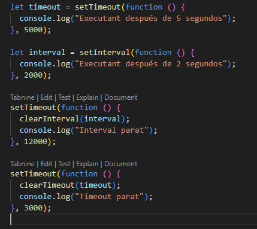
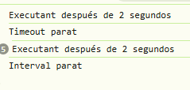
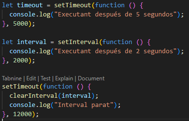
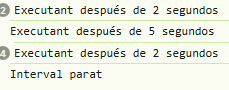

Index
Temporitzadors
Timeout
: Executa una funcio 1 sol cop despres del temps especificat.
Interval
: Executa REPETIDAMENT una funcio despres del temps especificat.
En
clearTimeout()
i el
clearInterval()
permeten posar fi als temporitzadors, pero per pararlos es te que
haver ficat el temporitzador en una variable



